结论：放量拉升突破 3510，短线低点大概率成立，但已进 3620 压力区 —— 弱势视角看待，总仓 ≤4 成、不追涨、可适当止盈。
上证收 3606.49（+3.73%），高 3610.72（距 3620 差 9.28 点），站上 MA5 3529.43；两市成交 19998 亿、环比 +51.8%，涨停 417 家。二类热点华为昇腾 +11.21% 与人形机器人 +10.25%，银行 -1.95% 逆势。池内 8 只全部无方法买点。
① 「上证指数涨幅 3.73%」 —— 实测 +3.73% ✓；「收有力度阳 K 线」 —— 开 3482.38 → 低 3467.41 → 收 3606.49，收在最高 3610.72 下方 4.23 点 ✓
② 「直接突破 3510」 —— 最低 3467.41 在 3510 之下，午后突破后收在其上方 96.49 点 ✓；「临近收盘出 15 分钟底分型回抽」 —— 缠论定性，按老师口径引用
③ 「临近上方压力 3620」 —— 最高 3610.72，差 9.28 点；收盘站上 MA5 3529.43（止跌三要件第 2 条成立），第 3 条待下周一
④ 「下午开盘向上拉升」 —— 11:30 上证 3486.76 → 15:00 3606.49，午后贡献 119.73 点、占全天涨幅 129.61 点的 92.4% ✓（消息面无法核验）
⑤ 「先观察放大量后的持续性」 —— 两市 19998 亿（沪 9297.8 + 深综 10700.2），环比 +51.8%；量比 1.24 / 1.39；跌超 5% 仅 12 只、跌停 0 家
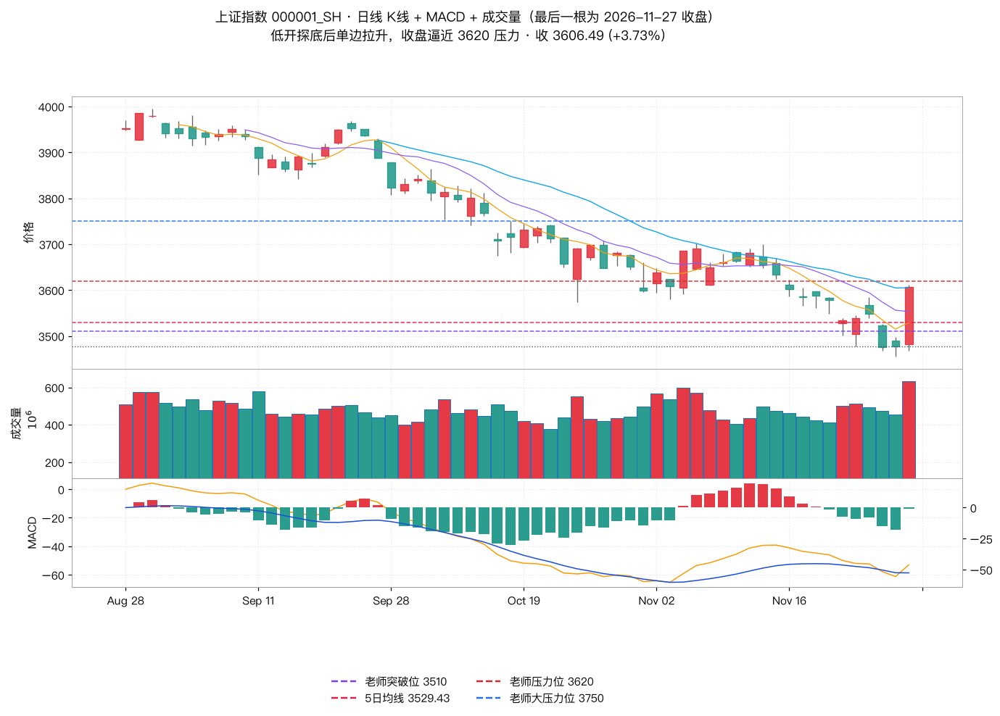
上证：收 3606.49 +3.73%，距 3620 差 9.28 点
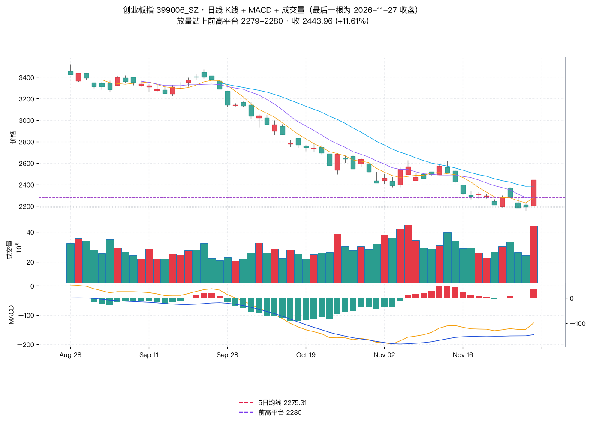
创业板指：收 2443.96 +11.61%，站上前高平台
以下两张为 15 分钟参照图（老师口径，我方未复算 15 分钟结构）。
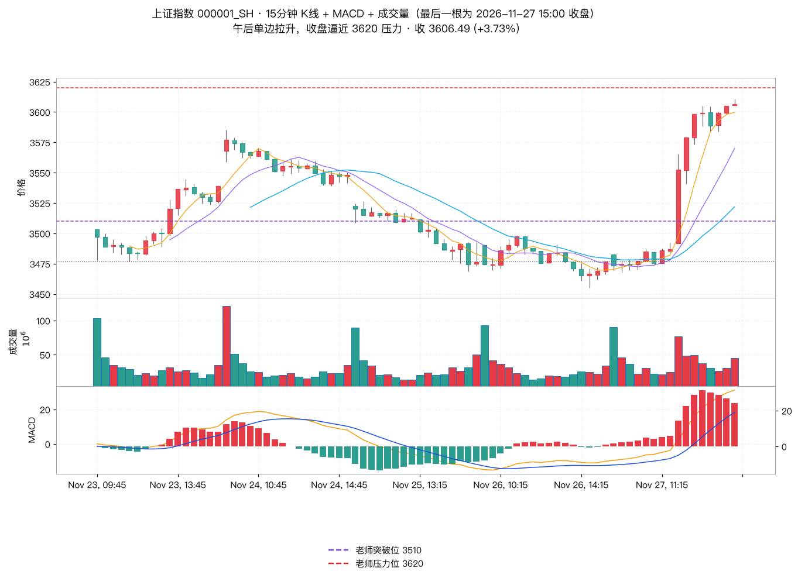
上证 15 分钟：午后单边拉升，末根 11-27 15:00 收盘，未复算 15 分钟结构
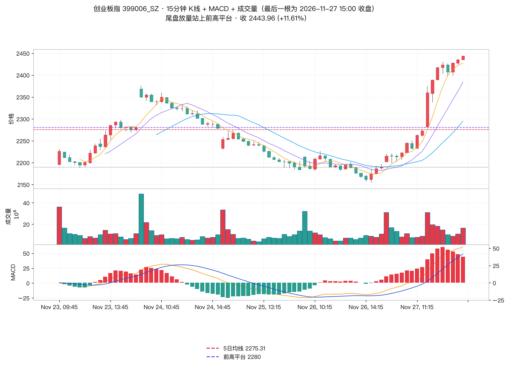
创业板 15 分钟：尾盘站上前高平台，末根 11-27 15:00 收盘，未复算结构
| 方向 | 老师口径（原文） | 实测（篮子均值 · 涨跌家数） | 判定 |
|---|---|---|---|
| 华为昇腾 | 「因 HBM 技术路线，华为昇腾比较热闹」，更大视角看成国产算力替代 | 华为概念 +11.21%（7/7 全涨）；国产算力 +13.34%（7/7） | 一致 |
| 人形机器人 | 「人形机器人板块今日异动……强度不如华为昇腾」 | 人形机器人 +10.25%（9/9），弱于华为昇腾 +11.21% | 一致 |
| 算力主线 | 「一类热点：无」 | 算力/CPO +14.84%、半导体 +13.69%、元件/PCB +10.64%、AI视频/传媒 +6.94% | 口径差异：涨幅更高未进榜 |
| 权重红利 | 「市场依旧不强势」 | 银行 -1.95%（0/5）、高股息红利 -1.88%（0/7）、煤炭/石油 -1.55%、电力 -1.00%；保险 +2.50% | 一致（保险除外） |
① 科技是唯一主线：涨停 417 家、涨超 5% 3880 只，中际旭创、新易盛、华丰科技 20cm 涨停。② 权重红利端继续杀，银行 0/5、高股息 0/7 —— 老师「弱势视角」在权重端成立。③ 昨涨停 65 只今日跌 10 只（跌超 5% 2 只），接力分化不大。④ 温度 25 度按结构给分，非按涨幅。
| 标的 / 题材 | 收盘 | 老师定性（老师口径） | 关键位 | 实测印证 | 动作 |
|---|---|---|---|---|---|
| 康龙化成 300759（大医药） | 45.40 +11.11% | 无方法买点；等 15 分钟回抽确认 43.58 的三买 | 43.58 / 37.51 | 高 45.58 低 40.60；收高于 43.58 达 1.82；37.51 未触（差 3.09） | 等回抽确认 |
| 瑞芯微 603893（端侧AI） | 211.72 +10.00% | 无方法买点；涨停出日线底分型，但修复不理想、未出共振横盘 | — | 涨停收在最高；站上 MA5 201.65；距 60 日高 237.37 差 25.65 | 等 |
| 海天瑞声 688787（机器人） | 103.65 +12.30% | 无方法买点；修复一般，等内部共振结构 | 111.22 | 高 105.80，未到 111.22（差 5.42）；站上 MA5 100.36 | 等 |
| 伊利股份 600887（大消费+防守） | 32.63 -2.39% | 无方法买点、不追涨；跌破 31.95 意味顶背驰大概率出现可高抛 | 31.95 | 最低 31.97 未破（差 0.02）✓；收 32.63 失守 MA5 33.10；与指数反向 ✓ | 盯 31.95 |
| 创业板ETF易方达 159915（创业板宽基） | 2.471 +11.46% | 严格无方法买点；不追涨，可在 2.392 附近横盘震荡找机会；已参与者下周分批止盈 | 2.392 / 2.70 | 最低 2.213 曾破 2.392，收 2.471 重回其上；距 2.70 差 0.229；量比 1.41 | 分批止盈 |
| 中国船舶 600150（船舶） | 35.29 +1.99% | 无方法买点；走势没止跌，等突破 36.75 出 15 分钟三买 | 36.75 | 高 35.47 未到 36.75（差 1.26）；站上 MA5 34.89；60 日低 33.13 未破 | 等突破 36.75 |
| 中芯国际 688981（国产算力） | 134.42 +15.38% | 无方法买点；下午涨速快、日线出有力度底分型，不建议追买；下周观察三买或在 127.85 上方横盘，已参与者设止损 | 127.85 / 135.00 | 高 135.00 即 60 日高，收距其仅 0.58；站上 MA5 124.21；额 123 亿 | 不追，等回踩 |
| 兆易创新 603986（存储芯片）· 短线 | 217.34 +10.00% | 超跌思路、无方法买点；破 204.48 但没出 15 分钟回抽三买，个股驾驭难度大 → 短线剔除跟踪 | 204.48 | 涨停收在最高 217.34，破 204.48 超 12.86；站上 MA5 208.06 | 剔除跟踪 |
① 池子无新增无剔除，中线仍 7 只；兆易创新被明写「短线剔除跟踪」→ 短线池清空。② 全部「无方法买点」= 没有进场信号，只留触发条件。③ 最接近触发的是康龙化成（收 45.40 已越过 43.58）与创业板ETF（重回 2.392）；已到压力区的是中芯国际（距 60 日高 0.58）。
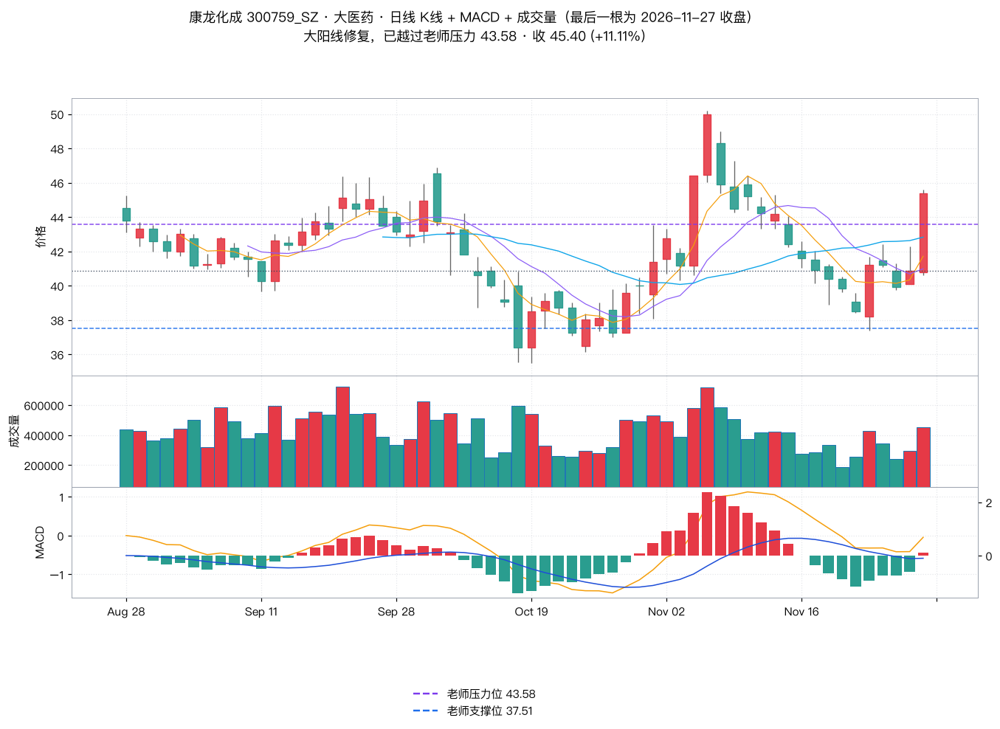
康龙化成：收 45.40 +11.11%，越过压力 43.58
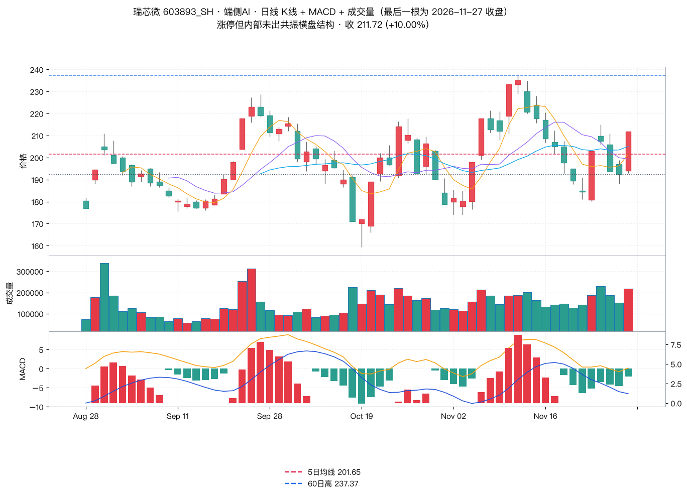
瑞芯微：收 211.72 涨停，内部共振结构未出
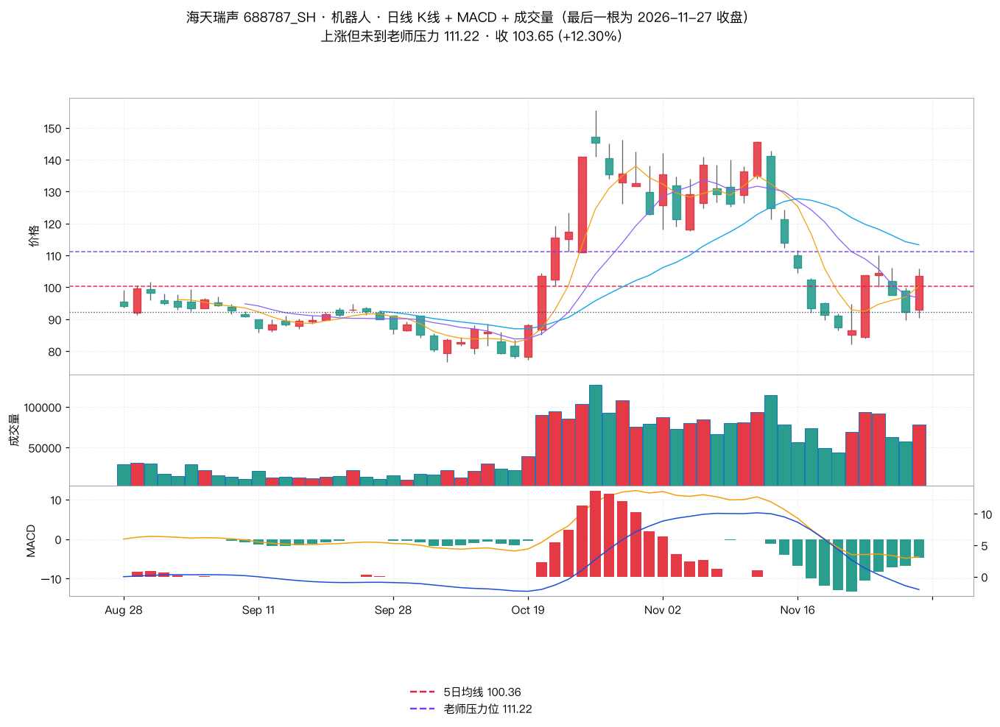
海天瑞声：收 103.65 +12.30%，未到 111.22
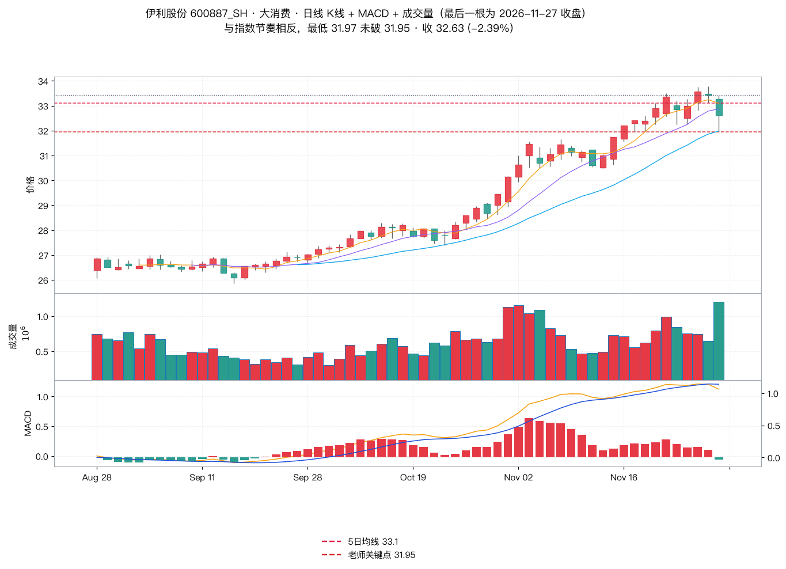
伊利股份：收 32.63 -2.39%，最低 31.97 未破 31.95
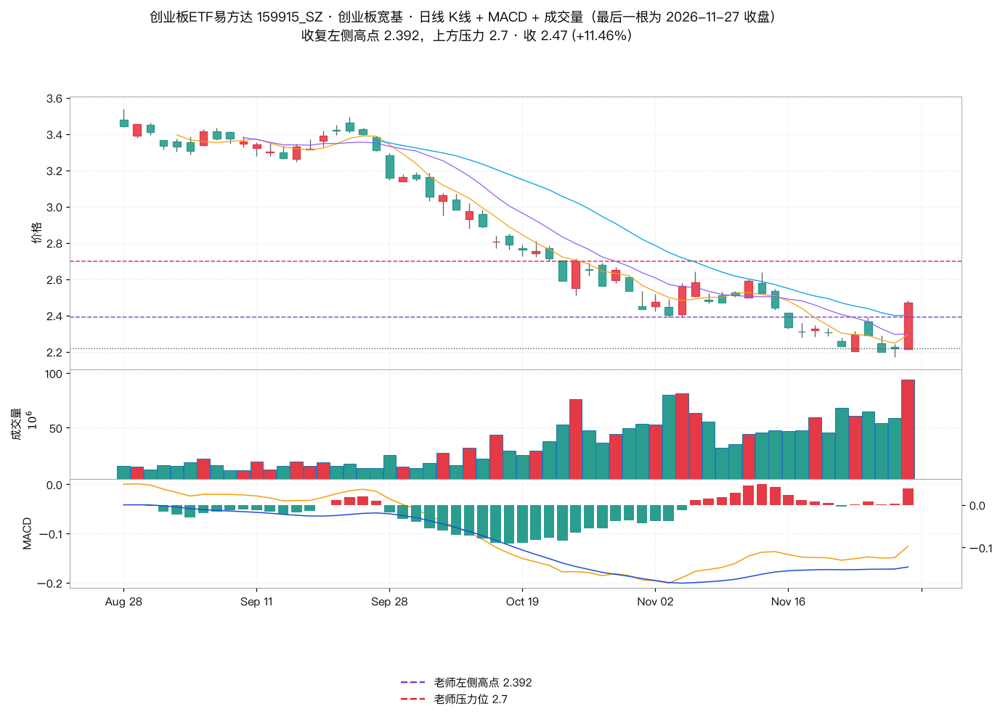
创业板ETF：收 2.471 +11.46%，重回 2.392 上方
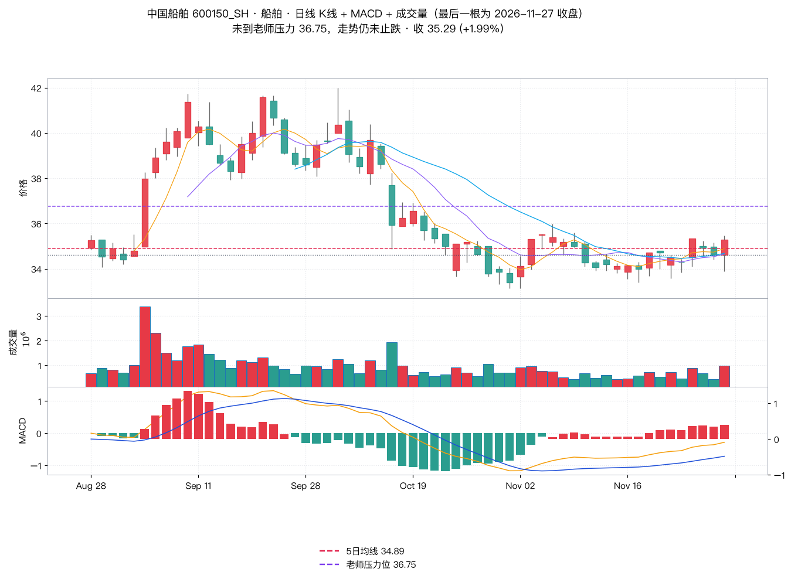
中国船舶：收 35.29 +1.99%，未到 36.75
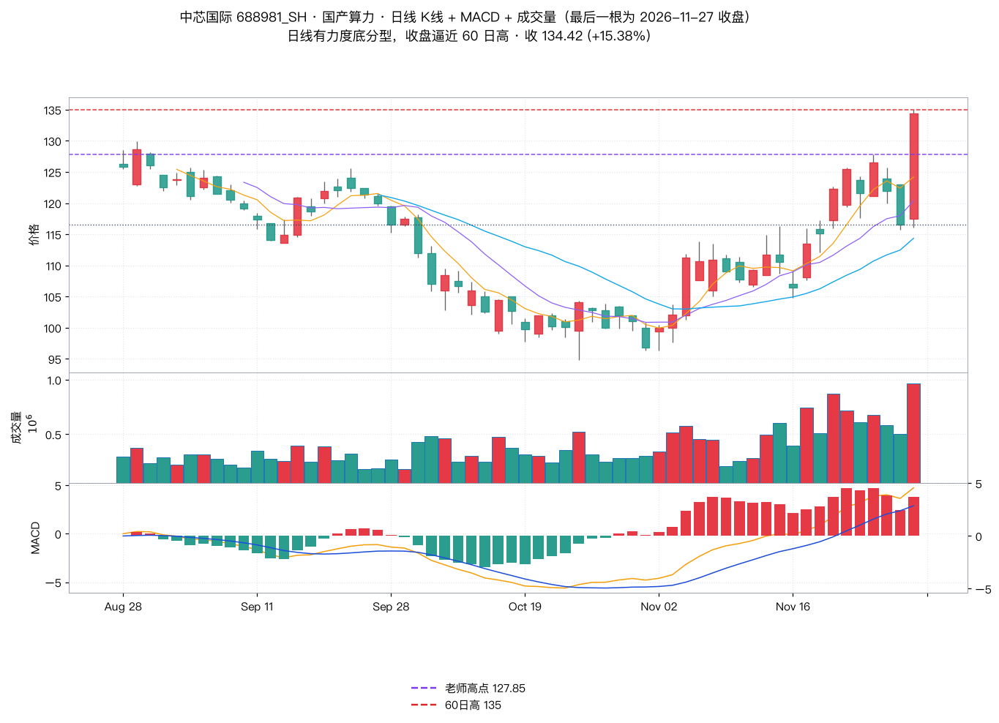
中芯国际：收 134.42 +15.38%，距 60 日高仅 0.58
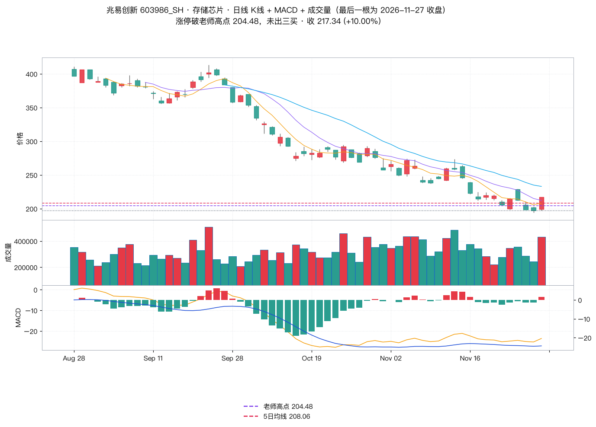
兆易创新：收 217.34 涨停，破 204.48
| 老师判据 | 实测 / 说明 | 判定 |
|---|---|---|
| 「市场温度 25 度」 | 涨 5382 / 跌 181（96.5% 上涨）、涨停 417 家、跌超 5% 仅 12 只 —— 按涨幅宽度属普涨 | 口径差异（温度按结构给） |
| 「一类热点：无」「二类热点：华为昇腾、人形机器人」 | 涨幅更高的算力/CPO +14.84%、半导体 +13.69%、国产算力 +13.34% 未进榜 —— 热点榜按结构定 | 口径差异 |
| 「市场上涨出 V 型反转的概率偏小」 | 后续概率预判，日线不可核验；实测当日开 3482.38 → 低 3467.41 → 收 3606.49 已走出低开探底单边拉升 | 无法核验 |
| 「临近收盘出 15 分钟底分型回抽」「1 分钟上涨的走势类型没完成」 | 缠论定性，我方未复算 15 分钟结构，只按老师口径引用 | 无法核验（老师口径） |
| 「不跌破 31.95 元则是强势震荡」（伊利股份） | 31.97 未破成立，但当日 -2.39%、收 32.63 失守 MA5 33.10，「强势」标签偏乐观 | 口径差异 |
其余判据当日一致 ✓：「上证指数涨幅 3.73%」「收有力度阳 K 线」「突破 3510」「下午开盘向上拉升」「临近 3620 压力」「华为昇腾与人形机器人强弱排序」「市场依旧不强势」「不追涨」「总仓上限四成、试探性第一笔 5%」。
潜在强势教学案例与港股：老师本期未给具体标的，不列。
来源：都业华《高级班》2026-11-27 收评，执业编号 A0400626100004。仅供参考，不作为买卖依据，据此操作风险自担。
口径：Tushare 11/27 日线（前复权）；两市成交额 = 沪 sh000001 + 深 sz399106；涨跌家数为 Tushare 全 A（5576 只），涨停/跌停/炸板取东财 push2ex（417/0/42）；板块为自建篮子收盘均值；ETF 份额最新为 11/26（Tushare 滞后一日）：中证1000ETF +7.37%、创业板ETF +3.83%。
缠论定性（15 分钟底分型、回抽、三买、中枢、背驰）按老师口径引用，我方未做分钟级复算，关键位用日线触达判据核验。